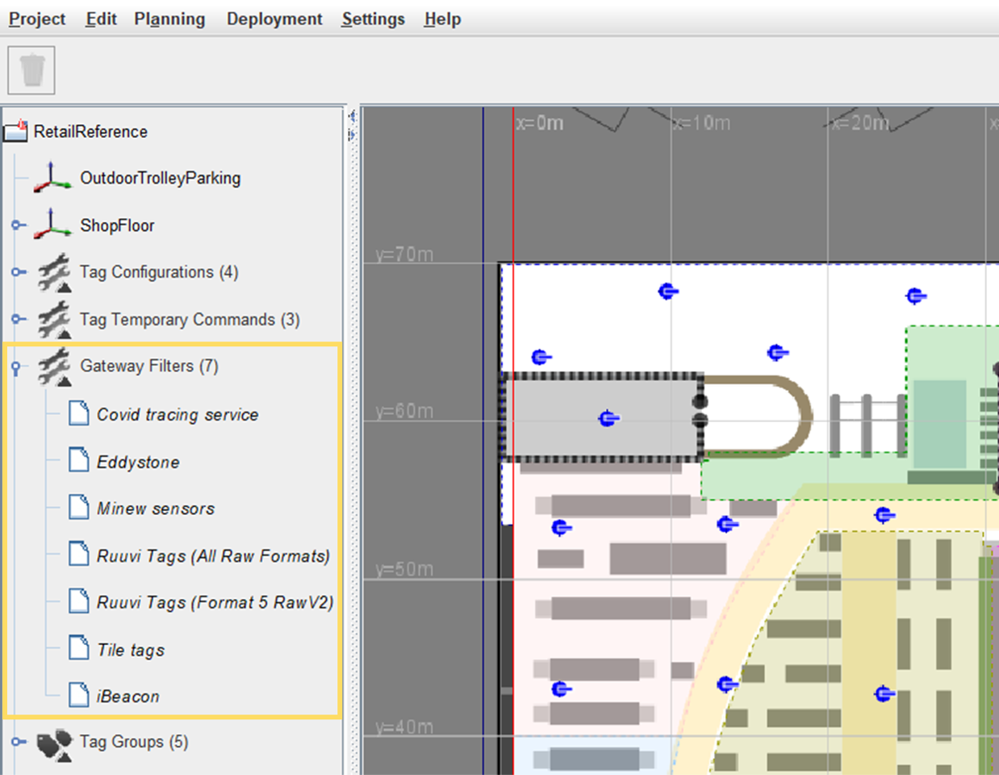
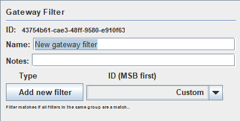
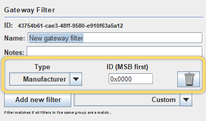
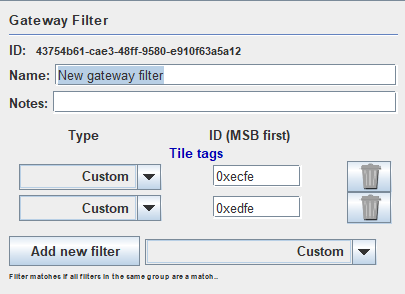
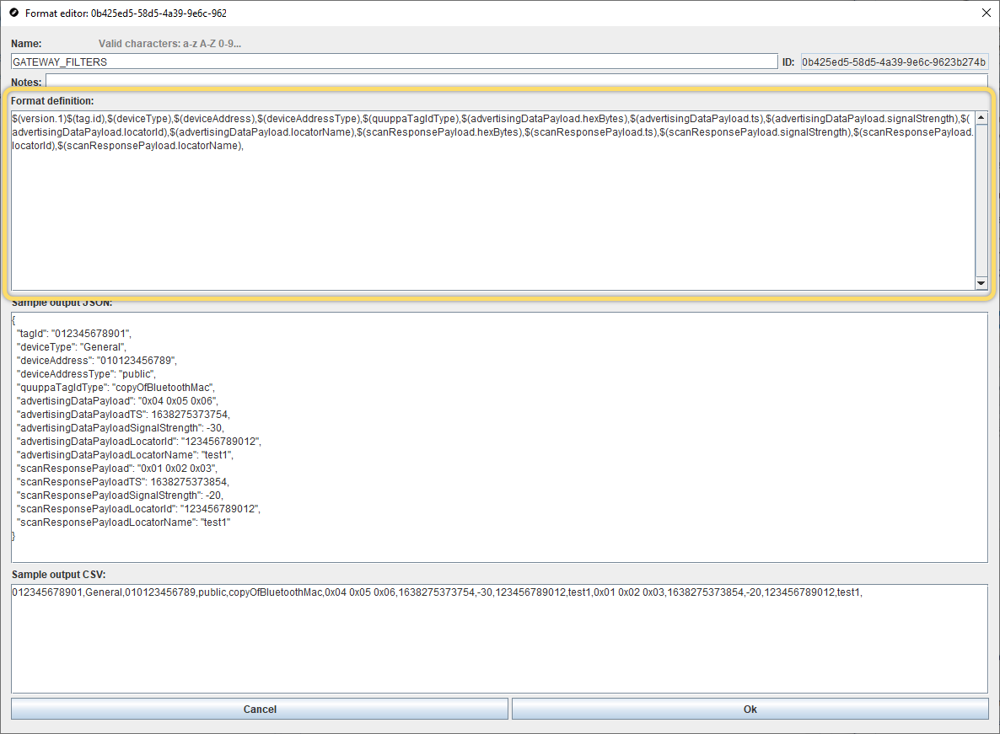
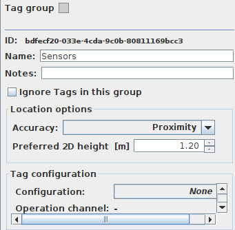
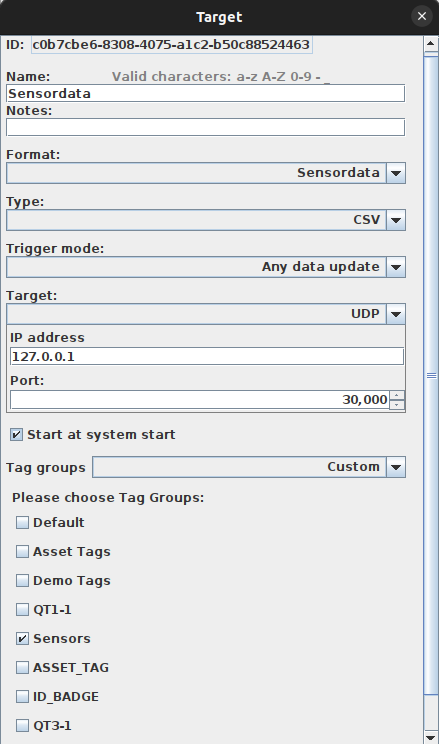

Use the Locator Gateway Filters
The Gateway feature enables the use of the existing Quuppa positioning infrastructure to gather third party information from the tags and devices in the tracked environment. This means that in addition to location data, the Quuppa system can be used to collect various other kinds of data from Bluetooth® enabled devices in the environment (e.g. heart rate, humidity and temperature sensor data) without the need for additional gateway hardware.
When the feature is in use, selected Generation Q Locators (Q17 Locators and Q35 Locators) act as gateways and pass third party data onto the Quuppa Positioning Engine (QPE), through which the data can be retrieved using the Quuppa APIs. The Quuppa system will pass the data through without processing it in any way (e.g. decrypt or decipher). By default, the feature is disabled, but can be taken into use by editing the Locator configurations in the QSP to apply Gateway Filters that will enable scanning for the types of data that you are interested in.
The feature uses the Locator's communication radio to scan for the third party data (rather than the positioning radio used for positioning data), and so it can be taken into use without affecting the positioning performance of the system. For details about optimising the overall performance of your system while using the Gateway feature, please see our Best Practices for Using Locators as Data Gateways document.
Prerequisites
When Bluetooth devices are in the advertising mode, they will periodically transmit advertising packets containing the advertising payload for that device, which includes manufacturer specific data that can be of interest for application developers. Before you can set any of your Locators to act as gateways, you'll need to decide which advertising packets are of interest to you and should be let through by the Quuppa system. When the gateway feature is enabled, only the advertising packets that match the filter conditions set for the Locator will be passed through. The filtering is applied based on either the Company ID (advertising element type 0xFF / vendor specific data) or the Service UUID (advertising element type 0x16 / service data) for the device in question.
For more information about the data types and formats, please see this Supplement to the Bluetooth Core Specification.
Gateway Filters
The gateway filters specify what type of device the Locators are scanning for based on the device's Company ID or Service UUID. For example, if you need to collect data from Tile Bluetooth trackers, you would select the Tile tag filter from the QSP's Gateway Filters list and apply it to your project file, so that the Locator knows what types of packets it's looking for from the air interface.
We have added some default gateway filters for commonly used devices into the QSP. You can apply these defaults directly to your own project or create custom filters. A list of the currently available Gateway filters for your project file can be found in the QSP's object tree (panel on the left).

The default filters provided by Quuppa are:
- Covid tracing services - Filter for Covid tracing applications
- Eddystone - Filter for the generic Eddystone format (includes UID, URL, TILM and EID types)
- Minew sensors - Filter for Minew sensors
- Ruuvi Tags (All Raw Formats) - Filter for Ruuvi tags (includes all raw formats)
- Ruuvi Tags (Format 5 RawV2) - Filter for Ruuvi tags with data format 5
- Tile tags - Filter for Tile tags using both possible service UUIDs
- iBeacon - Filter for iBeacon devices
If you can't find a filter for the device type that you would like to scan for in this list, then you can create your own custom filters.
Enable Data Gateway
To start using a Locator as a data gateway, set a gateway filter that defines what types of data packets the Locator should scan for. To do so, follow these steps:
- Open your project in the QSP.
- In the QSP object tree on the left, select the Locator that you want to use as a data gateway.
- In the object info panel on the right, use the Gateway
filter drop-down menu to select the gateway filter that you
want to use. Tip: To apply the setting to multiple Locators at the same time, select multiple Locators from the object tree (hold Ctrl while you are making the section) and then apply the setting from the object info panel on the right. Just make sure to also click on the Set Filter button next to the drop-down menu to save your selection.
If you would like to select more that one option from the list, please refer to the Create Filter Groups section below, and if the filter that you need is not yet on the list, please refer to the Create Custom Filters section below.
- Save and submit your project file to the Quuppa Customer Portal.
- Complete a file sync for your Quuppa Positioning Engine to take the new project file into use.
Create Custom Filters
If you cannot find the device type that you want to scan for from the list of filters, you can always create a custom filter for your project. To do so, follow these steps:
- Open your project in the QSP.
- In the QSP object tree on the left, right-click on Gateway Filters and select Add Gateway Filters.
- In the panel that opens on the right, give the new filter a name and
add some notes to describe the filter.

- From the drop-down menu, select Custom and click on the Add new filter button.
- Define the following for the filter:
- Type - Options are Manufacturer ID (i.e. Company ID) or Service UUID
- ID (MSB first) - The ID pattern that the Locator will scan for, in the most significant bit (MSB) first format. Find the right company ID from this list or Service UUID from this list.

Tip: If the ID input field turns red, this is a warning to indicate that this selection should be reconsidered. Typically this will be shown when the device type selected is likely to cause a high packet load in the air interface and therefore may put unnecessary load on the Locator if selected. -
Once you have created the custom filter, it will show in the object tree's gateway filters list. You can now apply it to your project by following the steps in the Enable Data Gateway Feature section of this guide.
Note: If you need more advanced filtering rules for your project, please contact Quuppa Support.
Create Filter Groups
In some cases, you may want to apply multiple filters from the list to your project. For example, if you want to collect third party data from both Ruuvi tags and Tile tags. Filter groups allow you to combine multiple filters into one, so that the Locator will scan for data packets that fulfill at least one of the applied filters. To apply filter groups to your projects, follow the steps below:
- Open your project in the QSP.
- In the QSP object tree on the left, right-click on Gateway Filters and select Add Gateway Filters.
- In the panel that opens on the right, give the new filter a name and add some notes to describe the filter.
- From the drop-down menu, select the filter that you want to add and click on
the Add new filter button. Repeat until you have all of
the filters that you need. The filters that have been added will be listed
in the panel so you can check what you have already included.

- Once you have created the filter group, it will show in the object tree's gateway filters list. You can now apply it to your project by following the steps in the Enable Data Gateway Feature section of this guide.
Import & Export Filters
Once you have created custom filters or filter groups, you may want also want to apply them to your other project. To do so you can export the gateway filters from this project and import them into another project file using the QSP's importing and exporting tools. For more information about importing and exporting project objects, please see the Import or Export Project Objects section of this manual.
Access the Data
The raw third party data collected by the Locators can be accessed through Quuppa's Get Tag Data API method. To access the gateway data fields, either use the ALL_ITEMS API data format available via the QSP (which includes all of the gateway fields) or create a custom API data format.
To create a custom API data format that includes all of the gateway fields, add the following to the format definition:
$(version.1)$(tag.id),$(deviceType),$(deviceAddress),$(deviceAddressType),$(quuppaTagIdType),$(advertisingDataPayload.hexBytes),$(advertisingDataPayload.ts),$(advertisingDataPayload.signalStrength),$(advertisingDataPayload.locatorId),$(advertisingDataPayload.locatorName),$(scanResponsePayload.hexBytes),$(scanResponsePayload.ts),$(scanResponsePayload.signalStrength),$(scanResponsePayload.locatorId),$(scanResponsePayload.locatorName),In the QSP's format editor, it would look something like this:

For more detailed instructions about editing API data formats using the QSP, please see the API Data Formats & Output Targets section of this guide and for more about the API method itself, please refer to our API documentation, which is available either via the QPE Web Console or from the Quuppa Customer Portal's Downloads page.
Create Output Target Only for IoT Gateway Data
- Create a tag group for sensors in the QSP project file.

- Define an output target and only output data for the sensors tag
group.

- If you already now the IDs of the sensors (BLE MAC address), you can include those in the project file, or
- You can use setTagGroup API to move sensor tags to the sensors tag group.
- Start the output via API or from the QPE web console (or configure it to autostart on QPE start)